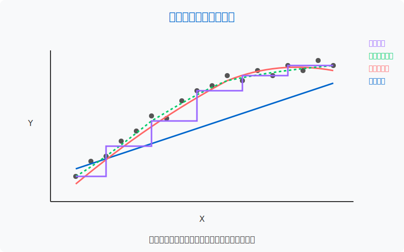

模块三：计量经济学模型与传统机器学习融合应用
计量经济学模型与传统机器学习融合应用
模块概述
本模块旨在探索计量经济学模型与传统机器学习方法的结合应用。这两个领域虽然起源和发展路径不同，但在数据分析和预测建模方面有很多互补之处。通过融合这两种方法，可以既保留计量经济学对因果关系和解释性的重视，又利用机器学习在预测和处理复杂数据结构方面的优势，为商业智能和决策分析提供更全面的分析框架。

学习目标
完成本模块学习后，您将能够：
- 理解计量经济学和机器学习的基本原理与差异
- 掌握主要的计量经济学模型和传统机器学习算法
- 识别适合不同问题类型的建模方法
- 结合两种方法的优势进行实际问题分析
- 评估和解释混合模型的结果
计量经济学与机器学习比较
计量经济学与机器学习的核心差异
- 目标导向
- 计量经济学：因果推断、解释性和政策评估
- 机器学习：预测、模式识别和自动化决策
- 方法论路径
- 计量经济学：基于理论建模，重视模型假设和统计检验
- 机器学习：数据驱动建模，强调算法性能和预测准确性
- 模型复杂性
- 计量经济学：偏好简约模型，重视解释性和稳健性
- 机器学习：可接受复杂模型，强调灵活性和适应性
计量经济学模型基础
线性回归与扩展
经典线性回归是计量经济学的基石，包括：
- 普通最小二乘法(OLS)与假设条件
- 异方差性和自相关问题的处理
- 多重共线性诊断与解决
- 变量选择与模型评估
面板数据模型
面板数据结合了时间序列和横截面数据的特性：
- 固定效应与随机效应模型
- 动态面板模型
- 混合效应与层次模型
- 差分和系统GMM估计
时间序列模型
处理随时间变化的经济和金融数据：
- ARIMA与季节性模型
- GARCH族模型与波动率建模
- 协整与误差修正模型
- 向量自回归(VAR)模型
因果推断方法
识别因果关系的计量经济学方法：
- 工具变量法
- 双向固定效应模型
- 断点回归设计
- 倾向得分匹配与处理效应分析
传统机器学习方法
监督学习
监督学习基于标记数据进行预测：
- 线性与逻辑回归(作为机器学习算法)
- 决策树与随机森林
- 支持向量机(SVM)
- k-近邻(KNN)算法
无监督学习
无监督学习寻找数据中的结构和模式：
- 聚类算法(K-means, 层次聚类)
- 主成分分析(PCA)与降维
- 异常检测方法
- 关联规则挖掘
集成学习
结合多个模型以提高性能：
- Bagging与随机森林
- Boosting算法(AdaBoost, Gradient Boosting)
- Stacking与超级学习器
- 投票与加权集成
模型评估与选择
评估和选择最适合问题的模型：
- 交叉验证技术
- 偏差-方差权衡
- 过拟合与正则化
- 模型解释性工具
融合应用方法
预测与因果结合
将预测能力与因果推断结合：
- 基于预测的因果效应估计
- 机器学习增强的工具变量法
- 双重机器学习
- 异质处理效应的机器学习方法
特征工程与选择
利用不同技术增强变量选择：
- 计量经济学指导的特征工程
- LASSO和弹性网正则化
- 可解释特征选择方法
- 因果推断驱动的特征筛选
混合建模策略
结合两种方法创建混合模型：
- 分段建模(不同阶段使用不同方法)
- 嵌套模型结构
- 后处理方法(使用一种方法的输出作为另一种的输入)
- 集成框架下的方法组合
解释性增强
提高复杂模型的解释性：
- 部分依赖图
- SHAP值分析
- 局部近似解释器(LIME)
- 全局代理模型
应用领域
经济与金融
- 宏观经济预测与政策分析
- 金融市场风险评估
- 信用评分与欺诈检测
- 投资组合优化
商业分析
- 需求预测与价格弹性
- 顾客行为与市场细分
- 营销活动效果评估
- 供应链优化
公共政策
- 政策影响评估
- 教育与健康干预效果分析
- 环境政策与资源管理
- 社会经济不平等研究
推荐工具
融合计量经济学和机器学习的Python工具包：
- 计量经济学工具
- statsmodels: 经典计量模型和统计测试
- linearmodels: 高级计量经济学模型(面板数据等)
- arch: 时间序列分析和波动率建模
- causality: 因果推断方法实现
- 机器学习工具
- scikit-learn: 传统机器学习算法
- XGBoost/LightGBM: 高效梯度提升实现
- mlxtend: 扩展机器学习工具集
- imbalanced-learn: 处理不平衡数据
- 解释性工具
- SHAP: 基于博弈论的模型解释
- eli5: 模型检查与解释库
- PDPbox: 部分依赖图和ICE图
- Alibi: 解释和监控机器学习模型
学习资源
基础教程
- Econometrics in Python by QuantEcon
- SciKit-Learn官方教程
- EconML文档 - 微软因果机器学习库
进阶资源
- Hastie, Tibshirani & Friedman的《The Elements of Statistical Learning》
- Angrist & Pischke的《Mostly Harmless Econometrics》
- Athey & Imbens的《Machine Learning Methods for Estimating Heterogeneous Causal Effects》
- 《Causal Inference for The Brave and True》在线教程
在线课程
- Econometrics: Methods and Applications (Coursera)
- Machine Learning by Andrew Ng (Coursera)
- Causal Inference (edX)
进阶探索方向
- 可解释人工智能(XAI): 发展更好的方法解释复杂模型
- 因果机器学习: 结合因果推断与机器学习前沿
- 贝叶斯计量经济学: 贝叶斯方法在经济建模中的应用
- 神经网络在计量中的应用: 深度学习与传统计量的结合
- 强化学习与动态模型: 用于优化与决策问题